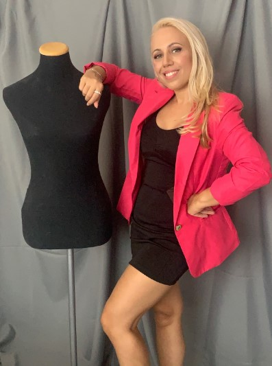

Te ayudo a potenciar tu estilo, mejorar tu confianza y proyectar una imagen coherente y auténtica.
¿Qué pasaría si cambiando tu autoimagen y tu estilo personal pudieras transformar por completo tu imagen tanto a nivel personal como profesional?
Si sientes que no estás proyectando la imagen adecuada, no tienes un estilo definido y estas buscando un cambio radical…
Si no te sientes seguro/a al vestirte, no sabes que ponerte, sientes que nada te queda bien…
Si no sabes cómo sacarle el máximo partido a tu cuerpo y a tu rostro, no sabes diferenciar que es lo que más te favorece…
Si te gustaría destacar en el ámbito laboral con una imagen profesional acorde, que impresione a tus clientes o en entrevistas laborales…
Si eres un emprendedor y sientes que tu imagen no está conectado con los clientes correctos..
Si no tienes tiempo para preocuparte por tu imagen y necesitas una solución práctica y efectiva que no solo ahorre tiempo sino también dinero…
Si has respondido sí a uno o más de estas preguntas, esta asesoría es para ti.
Tu imagen personal es tu carta de presentación, refleja quien eres y cómo quieres ser percibido. Es un reflejo de tu personalidad, tus valores y tus objetivos. Y aunque muchas veces se dice que no debemos juzgar a un libro por su portada, lo cierto es que nuestra apariencia es la primera impresión que damos a los demás.
Una imagen personal coherente y auténtica puede abrirte puertas en diferentes aspectos de tu vida, desde el ámbito profesional hasta el personal. Te permite transmitir confianza, profesionalismo y seguridad en ti mismo, lo que puede ser crucial para conseguir tus objetivos y alcanzar el éxito.
¿Qué sucede cuando tienes una buena autoimagen, un estilo definido, tienes confianza en ti y eres auténtico?
Cambia la forma en que los demás te perciben, mejorando tus relaciones personales y profesionales.
Aumentan tus posibilidades de éxito en el trabajo y en tu carrera profesional.
Te ayuda a sentirte más atractivo/a, lo que aumenta tu confianza en las relaciones románticas.
Hace que sientas seguridad en cualquier situación y que seas un imagen gracias al positivismo que proyectas.
Mejora tu salud emocional y tu motivación en la vida.
Trabajar en tu autoimagen y tu estilo te permite:
Ahorrar tiempo y dinero al comprar solo lo que realmente necesitas.
Saber que prendas y colores te favorecen más.
Elegir estratégicamente según tus necesidades.
En guardarropas funcional y organizado
Estrategias para potenciar tu estilo y estar a la moda.
Desarrollar una marca personal.
Aplicar códigos de vestimenta.
Comunicarte a través del lenguaje corporal.
Adquirir una mentalidad de éxito que te ayude a mejorar tu estilo de vida.
Mi misión es ayudarte a descubrir y proyectar tu mejor versión a través de una imagen personal y profesional coherente y auténtica.
Quiero ayudarte a crear una imagen que refleje tu personalidad y te permita alcanzar tus metas personales y laborales.
Te guiaré en cada paso para que puedas transformar y potenciar tu imagen y tu estilo.
Con mi metodología no solo te ayudaré a elegir la ropa y los accesorios adecuados, sino que también te guiaré en el desarrollo personal y la mentalidad de éxito. Ya que una imagen segura y confiada viene de adentro.
Trabajar en tu desarrollo personal te ayudará a descubrir quién eres realmente y qué es lo que quieres transmitir al mundo. Una mentalidad de éxito te permitirá afrontar los desafíos de la vida con confianza y determinación. Y cuando te sientas seguro y empoderado desde adentro, naturalmente proyectarás esa imagen al mundo.
Trabajaremos en el desarrollo de una imagen auténtica y coherente que te permita alcanzar tus objetivos personales y profesionales.

No esperes más para hacerlo realidad. Invierte en ti y transforma tu imagen.
¡Contáctame hoy mismo y empecemos a trabajar!
RESERVA UNA SESIÓN ESTRATEGICA GRATIS
Selecciona una fecha y horario, completa con tus datos, contame para que solicitas la asesoria asi puedo prepararme para la sesión.
En dicha sesión estratégica te diré cómo y si puedo ayudarte en tu proyecto personal o profesional.